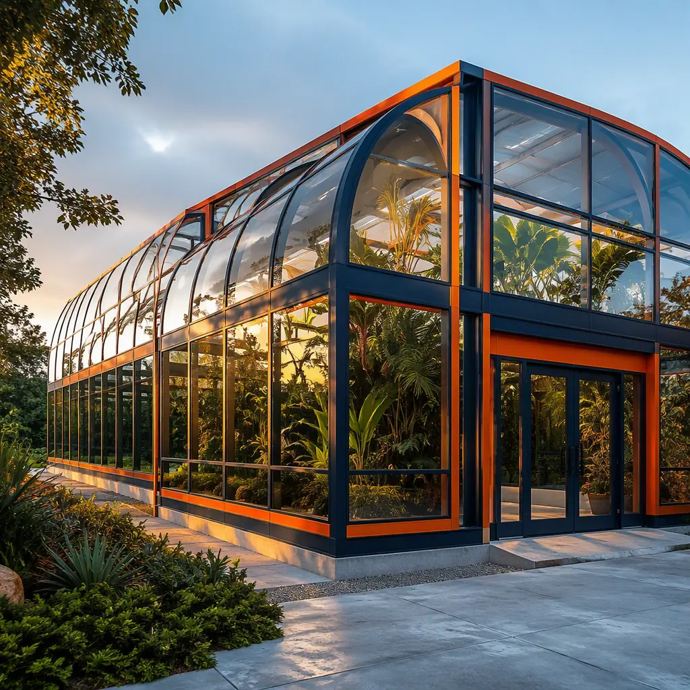
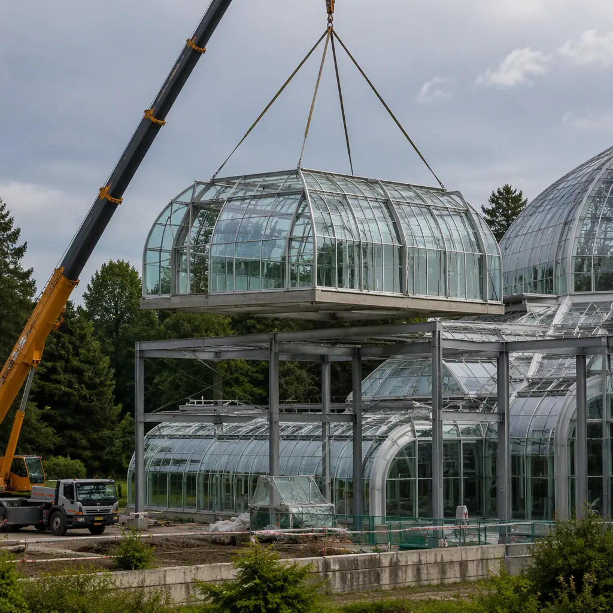
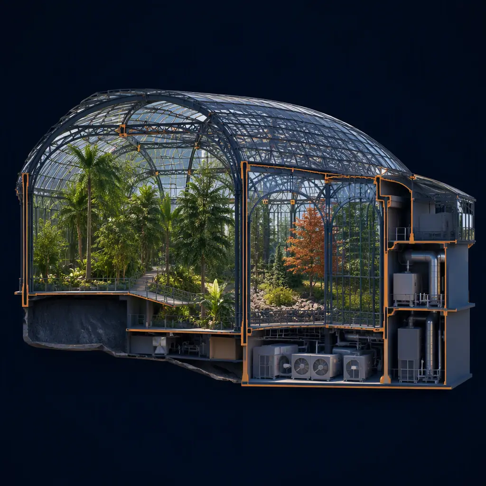
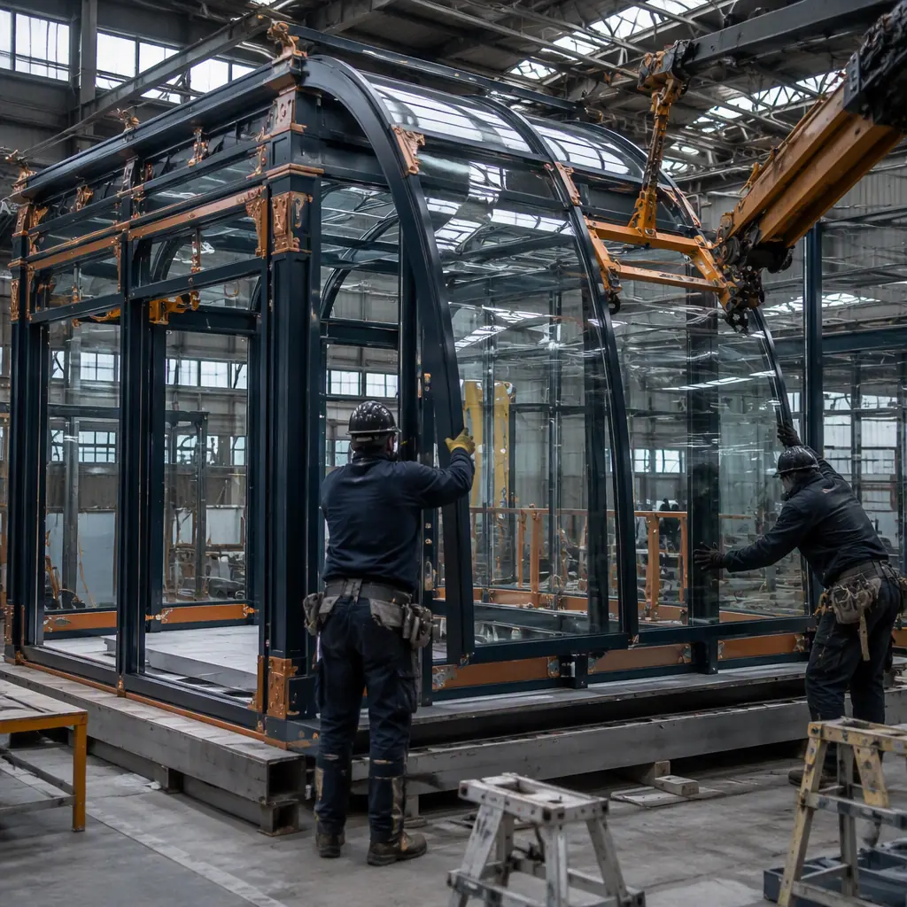

A botanical garden is a campus of extremes: glazed conservatory halls that hold tropical humidity at 70–85% relative humidity while outside temperatures swing through freezing winters, research and propagation buildings with their own microclimates, and visitor facilities that must open on schedule because membership and event revenue fund the collections. A mid-size public garden program — a 20,000–50,000 sq ft conservatory complex plus support buildings — conventionally takes 18–30 months to deliver: custom glazing systems engineered and installed in place, climate-control mechanical plants built on site, and curatorial spaces sequenced behind both. Modular prefabricated construction restructures the program: glazed conservatory halls are factory-built as steel-frame modules with glazing pre-installed, climate and mechanical cores arrive as pre-commissioned skid modules, and research, propagation, and visitor buildings are delivered as finished modular units — compressing the campus to 10–16 months with a 20–30% building cost reduction. The approach extends the controlled-environment logic we document for modular greenhouse construction from production horticulture to public, institutional, and event-driven conservatory programs. This guide covers the conservatory module package, climate engineering, cost structure, and campus delivery path for botanical gardens, zoos, universities, and municipal parks departments.

Why Conservatories Are a Structural Extreme
Conservatory buildings sit at the intersection of greenhouse engineering and public architecture, and that combination drives every decision:
- Humidity is the dominant design load. Tropical houses run 70–85% RH with internal temperatures of 70–85°F year-round. Condensation on structure, corrosion of fittings, and degradation of glazing seals are the classic failure modes of conservatory buildings — the same hostile-envelope discipline we document for modular building envelope systems, where vapor barriers and corrosion-rated materials are specified at module design stage rather than improvised in the field.
- Glazing drives the schedule. Curved glazing, thermally broken frames, and large clear spans are long-lead manufactured components. In conventional delivery, glazing is installed in place over months of weather-dependent work. In modular delivery, glazing is installed in the factory — panels fitted, sealed, and tested under controlled conditions — so the hall arrives at the site as a finished weather-tight structure.
- Climate zones are the program. A public conservatory typically combines tropical, temperate, arid, and Mediterranean zones in one complex, each with independent temperature and humidity setpoints. The mechanical plant that serves these zones is the longest-lead scope — and the most natural fit for skid-mounted factory modules.
- Collections impose deadlines. Plant acquisitions, accession seasons, and event bookings create opening dates that slip catastrophically in conventional delivery. The parallel factory schedule compresses the critical path so the campus opens when the collections and the calendar demand.
Conservatory vs. Open-Air Garden Buildings
A botanical garden campus splits into two fundamentally different building populations. The conservatory halls are the engineering showpiece — glazed, climate-controlled, and mechanically intense — while the surrounding campus of research labs, propagation houses, classrooms, gift shops, and event venues is conventional low-rise construction with garden-specific fit-out. Modular delivery treats both populations as factory programs running in parallel: the halls as custom glazed modules, the campus as standard finished modules. This mirrors the production-horticulture logic we cover for modular vertical farms and controlled-environment agriculture, where a mix of custom climate spaces and standard support spaces is delivered as one coordinated factory program. The distinction matters for procurement: the conservatory hall is a manufactured building product, while the campus buildings follow the standard modular procurement path we document for modular RFP procurement.
The Modular Botanical Garden Module Package
A modular botanical garden divides into functional blocks manufactured, tested, and shipped independently:
Glazed Conservatory Halls
Conservatory halls are built as steel-frame modules with glazing pre-installed in the factory: curved glazing panels for the signature hall, thermally broken frames, and automated roof vents and shade systems factory-fitted. Hall modules ship with their climate-control ducting, misting lines, and irrigation manifolds pre-installed, and are craned into place in sequence to form clear-span halls of 10,000–60,000 sq ft. The same large-glazing and custom-envelope capability we document for modular building design customization applies, scaled to horticultural duty cycles.
Climate & Mechanical Modules
Each climate zone is served by a skid-mounted mechanical module — air handling, humidification, heating, and cooling pre-piped and pre-commissioned in the plant, the same systems-integration discipline we cover for modular MEP systems integration. Energy recovery ventilators and heat pumps are factory-integrated, which is the primary driver of the 30–50% operating-energy reduction modular conservatories achieve versus site-built equivalents — the energy-optimization logic we document for modular building energy efficiency.
Curatorial, Research & Visitor Buildings
Research labs, herbarium and seed-bank storage, propagation houses, classrooms, gift shops, and event venues are delivered as finished modular units — the curatorial and collections logic we document for modular museum and archival storage construction, and the visitor-services program we cover for museum and cultural buildings.

Climate Control — Humidity, Temperature Zones & Energy
The engineering soul of a conservatory is its climate system, and modular delivery shifts that engineering into the factory. Each zone's air handling, humidification, and heating/cooling plant is assembled on a steel skid, hydro-tested, and run through its control sequences at the plant — collapsing the field commissioning that conventionally consumes six months of a conservatory schedule. Humidity control is the hardest requirement: tropical houses need 70–85% RH without condensation on structure or glazing, which drives the vapor-barrier and insulation specification for the envelope and the placement of supply and exhaust air paths through the hall. Energy is the operating-cost battleground — a 30,000 sq ft tropical house can consume $150,000–300,000 per year in heating, humidification, and cooling energy — so modular halls integrate energy recovery, thermal curtains, and night-setback controls in the factory, the same energy-optimization approach we document for modular energy-efficient buildings and the LEED strategy we cover for modular LEED certification. The completed climate system connects into the smart-building monitoring platform we describe in modular smart building technology, giving curators remote visibility of every zone.
Cost Structure — Modular vs. Conventional Conservatory Delivery
| Cost Category | Conventional (40,000 sq ft complex) | Modular (40,000 sq ft complex) |
|---|---|---|
| Conservatory halls (glazed) | $12–20M | $9–15M (factory-glazed) |
| Climate & mechanical plant | $4–7M | $3–5M (skid modules) |
| Research, propagation & visitor buildings | $6–10M | $4.5–7.5M (finished modules) |
| Field labor, weather risk & schedule overhead | $4–7M | $1.5–3M |
| Total Building Program | $26–44M | $18–30.5M |
The 25–30% building cost reduction compounds with 8–14 months of earlier opening — for a public garden, that is a full season of membership, admissions, and event revenue, and for a university it is an academic year of research and teaching capacity. For the full economics of modular project delivery, see our 2026 modular cost guide and our developer's ROI analysis.

Curatorial & Collections Buildings
Behind the public halls, a botanical garden runs on collections infrastructure that has precise environmental requirements of its own: herbarium collections need stable low-humidity storage, seed banks need cold and desiccant-controlled rooms, and research labs need containment and ventilation standards — the precision-environment logic we document for modular laboratory and research facilities. These curatorial buildings are delivered as finished modular units with their environmental systems factory-integrated and pre-commissioned, and the collections-storage discipline follows our museum and archival storage guide. Because collections are irreplaceable, the buildings that house them benefit disproportionately from the factory quality-control and commissioning rigor of modular delivery — the QC systems we describe in modular factory quality control.
Propagation & Production Facilities
Behind the public gardens, every botanical institution runs production facilities that supply its collections: propagation houses for raising new plants, nursery yards for acclimatizing stock, and potting and media preparation buildings. These are working horticultural buildings with their own environmental demands — bottom heat, mist propagation, shade control, and quarantine space for incoming plants — and they are delivered as factory-built modules with the same controlled-environment systems we document for modular greenhouse construction. Because propagation facilities are utilitarian rather than architectural, they capture the largest share of modular cost savings, and they can be delivered and commissioned while the public halls are still in production — the scheduling logic we cover for modular construction scheduling. Gardens that also supply commercial nurseries or run plant-sale programs scale these modules with the production economics we describe for controlled-environment agriculture.
Site Planning & Landscape Integration
A botanical garden is as much landscape as building, and modular delivery changes how the two meet. Because buildings arrive as finished modules, site work — grading, utilities, paths, irrigation mains, and planting — proceeds on a parallel track and connects to the buildings during the crane campaign rather than waiting for structure completion, the site-integration discipline we document for modular design flexibility. Conservatory halls are sited for solar orientation — long axis east–west to maximize winter light in temperate and tropical halls — and the module footprint is planned to preserve mature trees and existing garden beds, with crane lay-down zones placed on future hardscape. Stormwater and irrigation systems tie into the garden's water budget, and the energy systems we describe above integrate with campus-wide sustainability targets — the master-planning approach we cover for modular LEED certification and the campus delivery path in our municipal buildings guide.
Visitor Experience & Event Spaces
Modern botanical gardens are event venues as much as collections institutions: weddings, exhibitions, concerts, and education programs generate a large share of revenue, and the buildings that host them must be as polished as the gardens themselves. Visitor center modules — ticketing, gift shop, café, and multi-purpose event halls — are delivered factory-finished with the acoustic treatment and flexible layout we document for modular acoustic performance and the design flexibility we cover for modular design customization. Because event spaces must host public audiences immediately, the fire-safety and accessibility compliance work we cover for modular fire safety is completed and inspected in the factory, removing the final inspection bottleneck that conventionally delays garden openings.
Phased Campus Development
Botanical gardens rarely build their full master plan at once. Campuses expand with new conservatory halls, add propagation and research capacity, renovate aging greenhouses, and replace visitor facilities while the existing garden stays open to the public. Modular delivery supports all of these as phased programs — each new hall or building is factory-built while the existing campus operates, then connected during a planned shutdown window, the live-facility phasing logic we document for modular additions and expansions. Municipal and public-garden programs follow the procurement and funding path we cover for modular government and municipal buildings and our modular construction lending guide.

Is Modular Right for Your Botanical Garden Project?
Modular conservatory delivery delivers the strongest value for public and municipal gardens (15,000–100,000 sq ft programs) where the opening date is tied to funding, season, or event bookings; for zoos and universities adding a conservatory to an existing campus; for gardens expanding with new climate zones or curatorial buildings while staying open; and for institutions pursuing LEED and net-zero targets, where factory-integrated energy recovery delivers measurable certification credits — the path we document for modular LEED certification. For signature conservatories with extreme architectural glazing statements, a hybrid approach — modular mechanical cores, curatorial, and visitor buildings around a conventionally built showpiece hall — captures most of the schedule benefit while keeping the landmark structure bespoke. In every case, the factory-built climate and collections infrastructure delivers the environmental precision that botanical collections depend on.